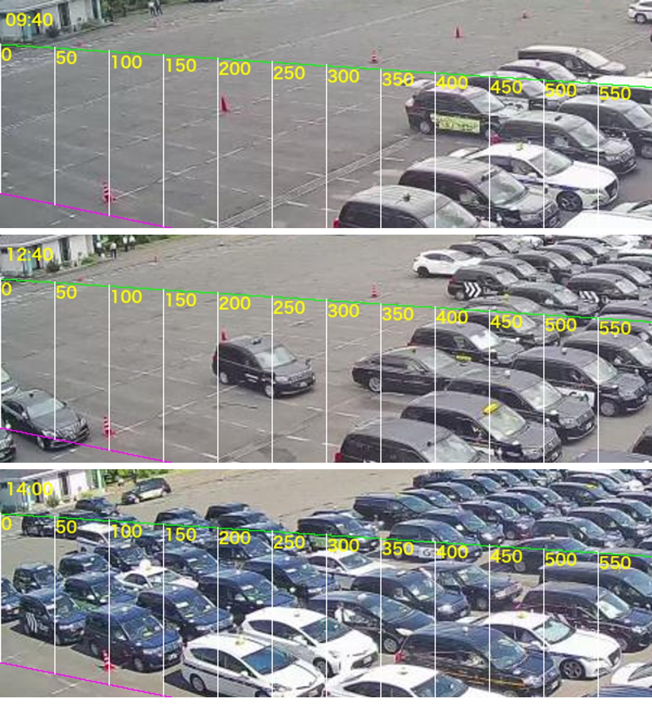
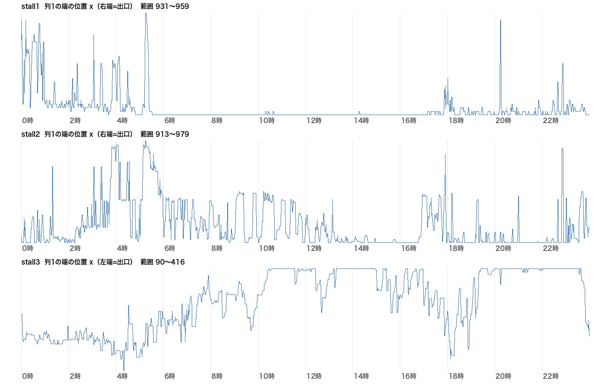
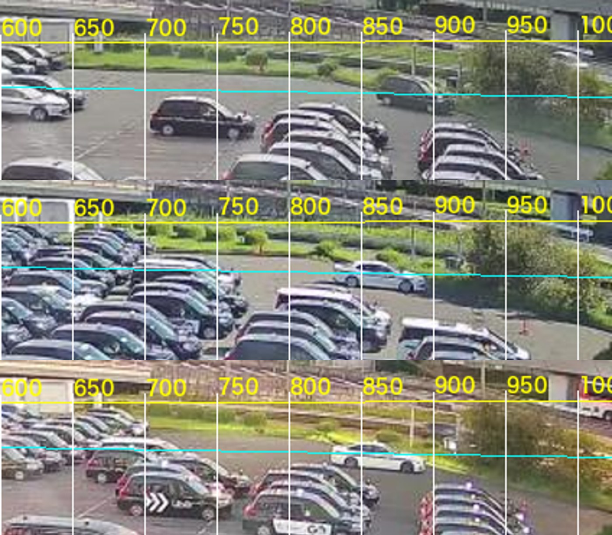
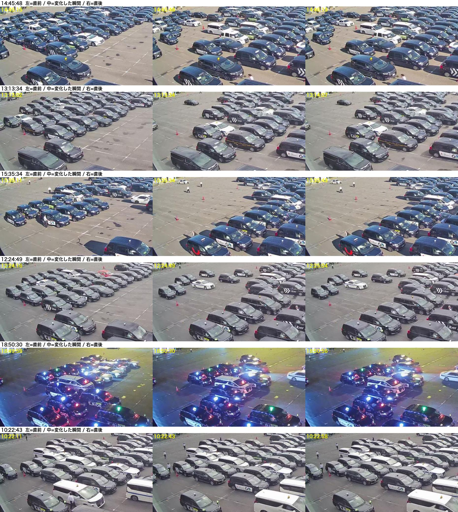
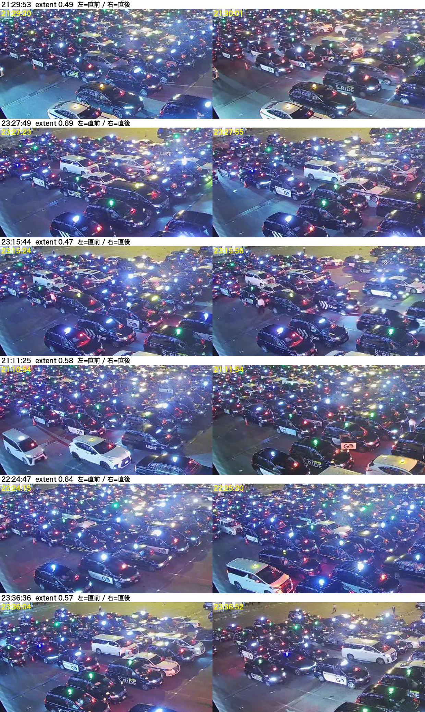
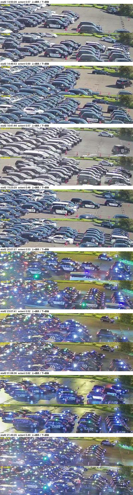

1〜3号の列移動は測れているか（2026-09-18）
結論：4号と同じ弱点を持ったまま。「帯の途中に置いた小箱」で数えているので、列1（出口側の端）を見ていない。
① 今の測り方（手前カメラ real001）

14:00〜14:40、5分おき。赤枠＝今の計測箱（stall1・stall2・stall3・stall4手前）。
- 3号の箱（縦長）は塊の右端＝入口側にある。出口は左端（記録どおり）。14:10〜14:15 は塊があるのに箱は空＝この間の動きは数えられない。
- 1号・2号の箱（小さい・遠い）は帯の左寄りにある。出口は右端。塊が箱まで伸びている時しか反応しない。
- 箱を車が通り抜ける時の「出る→入る」を1回と数えるので、2列まとめて進んでも1回になる（4号で見つけたのと同じ）。
② 3号の帯を拡大

緑＝2号/3号の境、紫＝3号/4号の境（設定）。3号の車は左下を向いて止まり、列1は帯の左端の縦一列。塊は左へ進む。赤枠（右寄り）は列1ではなく、塊の後ろ側。
③ 記録の数字で見ても
| 号 | 今の記録（9/9〜9/17） | 8/27監査（旧カメラ期の実測） |
|---|---|---|
| 1号 | 5〜14回/日 | 37回/日 |
| 2号 | 6〜16回/日 | 46回/日 |
| 3号 | 18〜40回/日 | 51回/日 |
| 4号（直した後） | 23〜31回/日 | 63回/日 |
※旧カメラ期の数字は測り方が違うので同じ物差しではないが、1号・2号の少なさは目立つ。
④ Aで着手した結果（2026-09-18・途中報告）
4号と同じく「列1の端の位置」を帯に沿って追ってみた。分かったこと：

3号の帯（緑〜紫）の左端。09:40 は塊の前縁が x≈350、12:40 は x≈310 で見えている。14:00 は塊が画面の左端を越えて続いている＝列1（出口側の端）が画面の外。
- 3号：混んでいる時間は列1がカメラに映っていない。空いている時（前縁が画面内）は4号と同じ方法で追える（9/17 で前進 32回を検出）が、満杯の時間帯（10〜11時・13〜15時・19〜23時）は前縁が動かないように見え、数えられない。
- 2号：出口側（右端）は画面内（x≈900〜960）。ただし帯の上端に出口道路が重なり、走り抜ける車が混ざる。
- 1号：出口側の端（x≈700）は画面内だが、遠くて車1台が幅 25px ほど。端の先は生け垣と道路。

9/17 の列1の端の位置（上から1号・2号・3号）。3号は昼〜夜の大半で「画面左端に張り付き」（＝列1が見えない）。1・2号は右端に張り付き（満杯 or 固定物）。

1・2号の右端（出口側）。上の帯（1号）の右側は出口道路と生け垣、下の帯（2号）は x≈960 まで車が詰まる。
⑤ 3号を実装した（A′で承認・2026-09-18 17:07 稼働開始）
やり方：帯（3号）の明るさの並びを30秒ごとに前後で比べ、塊の45%以上が同時に変わった瞬間を「塊が動いた＝列移動1回」と数える。照明の変化（並びがそのまま）、ちらつき、3分以内の二重は除く。3〜8時（乗り場停止中の入庫の並べ替え）は数えない。

昼の検出例6件（左＝直前、中＝変化の瞬間、右＝直後）。全部、塊が動いている。

夜の検出例6件。行灯の下でも塊の移動が取れている（12/12 本物）。
| 日 | 新（塊が動いた回数） | 旧（箱の記録） |
|---|---|---|
| 9/13 | 77 | 30 |
| 9/14 | 80 | 40 |
| 9/15 | 64 | 36 |
| 9/16 | 69 | 32 |
| 9/17 | 55 | 23 |
※新は3〜8時を含む生の回数（運用時間ゲート前）。8/27監査の旧カメラ期は 51回/日。
できなかったこと：1回が1列か2列かの区別。黒い車が並ぶと1台ぶんずれても同じ絵に見え、方向も量も決まらなかった（試した）。3号は「1回＝1列」で記録する。
Mac mini に組み込み済み（4号と同じ5分tick・30秒画像を処理）。9/13〜9/18 の過去分も置き換え済み。
⑥ 2号・1号も実装した（2026-09-18 17:4x 稼働開始）
3号と同じ「塊が動いた」方式。遠い帯は行灯のまぶしさと露出の変化に引きずられるので、2号・1号だけ「明るさの中央値を引いてから比べる」「画面全体が変わった瞬間は除く」を足した。

2号の検出例（昼4・夜4）。上＝直前／下＝直後。右端（出口側）付近で塊が動いている。
| 日 | 2号 新 | 2号 旧箱 | 1号 新 | 1号 旧箱 |
|---|---|---|---|---|
| 9/13 | 56 | 16 | 24 | 14 |
| 9/14 | 36 | 6 | 11 | 9 |
| 9/15 | 34 | 15 | 18 | 7 |
| 9/16 | 27 | 16 | 8 | 8 |
| 9/17 | 32 | 10 | 16 | 7 |
※8/27監査の旧カメラ期：2号 46回/日、1号 37回/日。2号は近づいた。1号はまだ少ない（遠くて車1台が25px。取りこぼしが残る見込み）。
これで 1〜4号すべて画像計測のイベント由来になった（4号だけ1列/2列を区別、1〜3号は1回＝1列）。過去分（9/13〜9/18）も置き換え済み。